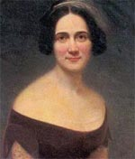

|

|

|
|
|
Born March 31, 1823 in Statesboro, South Carolina, diarist
and author Mary Boykin Chesnut is best known for her
extensive accounts of the Civil War. The daughter of Mary
Boykin and Stephen Decatur Miller, a United States
Congressman and Senator, as well as governor of South
Carolina, Mary Boykin Miller's life was shaped by Southern
politics. Her father, elected governor as a supporter of
nullification, returned to the United States Senate after
his gubernatorial term and continued to support Southern
rights.
Mary received an extensive education, first at home and
in local schools, and then at a French boarding school in
Charleston. Two years after her father died, Mary married
James Chesnut, Jr., in 1840. The two moved to Washington,
D.C. in 1858 after James's election to the United States
Senate. There Mary played hostess to many powerful people,
including the future leaders of the Confederacy. After
Lincoln's election, the Chesnuts returned to South Carolina
where James helped draft the state's December 1860 ordinance
of secession.
With the outbreak of war, Mary began keeping an extensive
journal to record the historic events occurring around her.
As the wife of a Confederate dignitary (James served as a
member of the Provisional Congress of the Confederate States
of America as well as an aide to General P. G. T. Beauregard
and President Jefferson Davis), Mary entertained many
Southern leaders. In her diaries, Chesnut commented on
meetings and parties with the Confederate elite, including
President Davis and his wife Varina. Chesnut also recorded
her views on slavery, war, and Southern society in general.
The diaries reveal a woman confident in her intelligence and
beauty.
After the Civil War, Chesnut attempted to use the
information in her wartime diaries to write a Civil War
novel. Ultimately, however, she devoted years to the
revision of her diaries for publication. Through these
heavy edits, Chesnut elaborated on specific topics and
eliminated comments that revealed personal flaws. Her
diary, first published in 1905 as A Diary from Dixie, as
Written by Mary Boykin Chesnut, reflected these
revisions as well as those by the editors of the volume.
Mary Boykin Chesnut died in 1886 before the publication of
her diaries.
Source: Joan Waugh, ed., Facts on File Encyclopedia of American
History: Civil War and Reconstruction, 1856 to 1869 (New York: Facts on
File, 2003), 58.
|